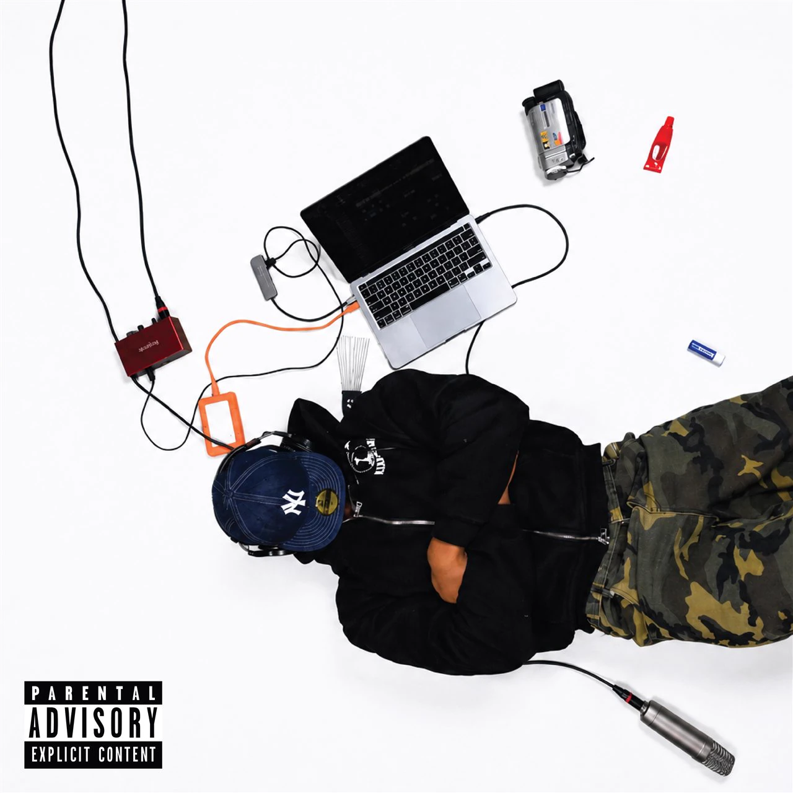
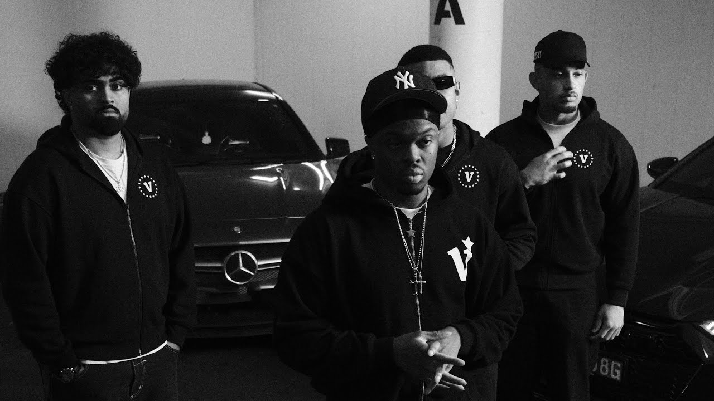
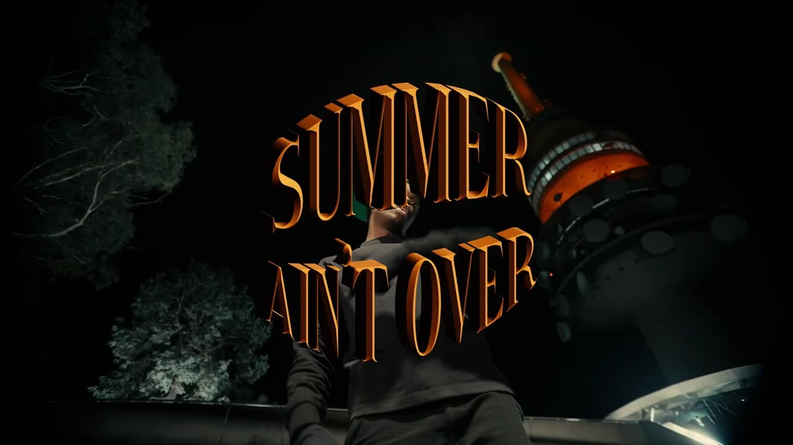
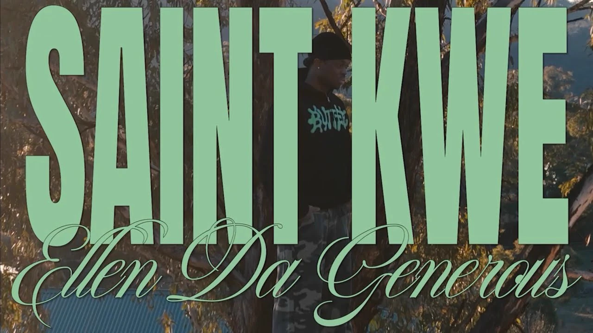
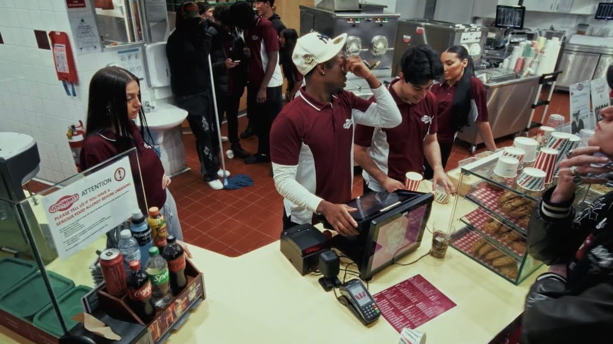
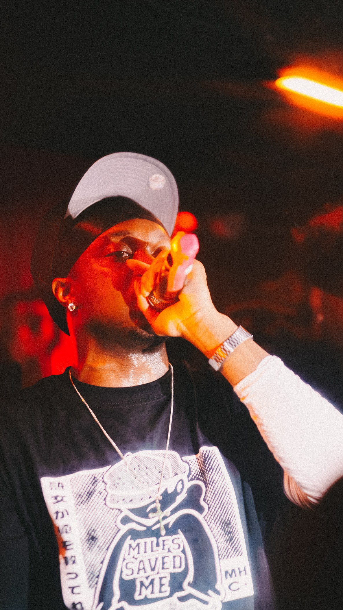
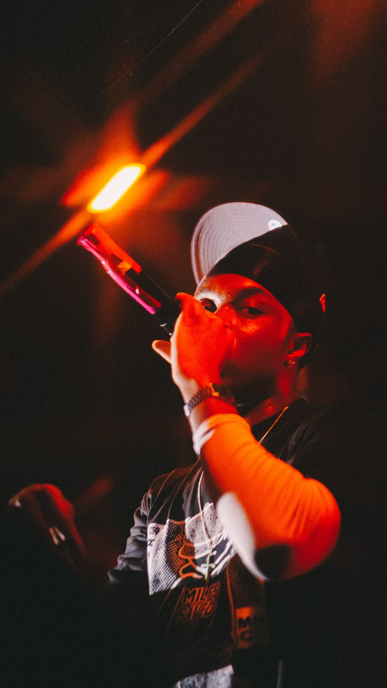
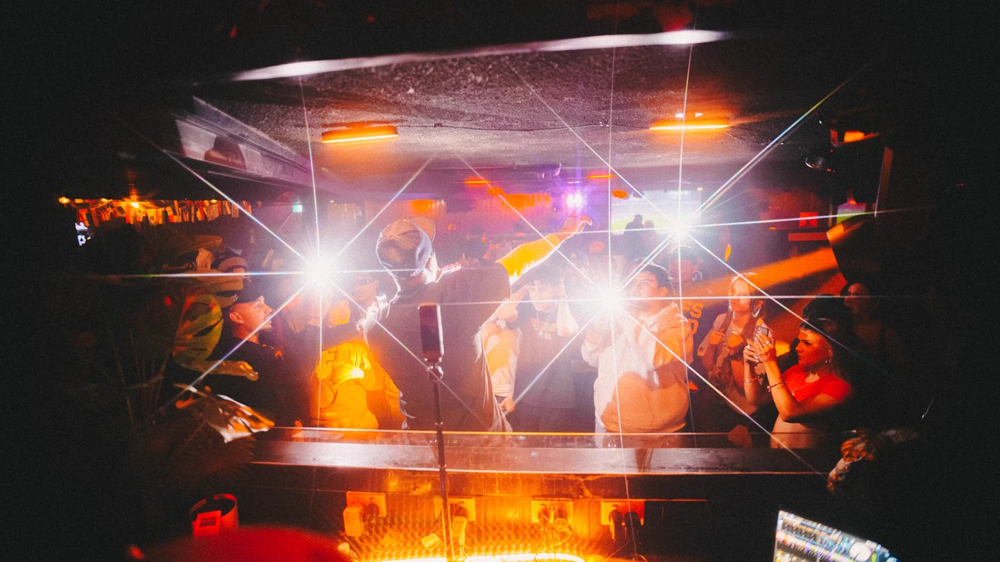
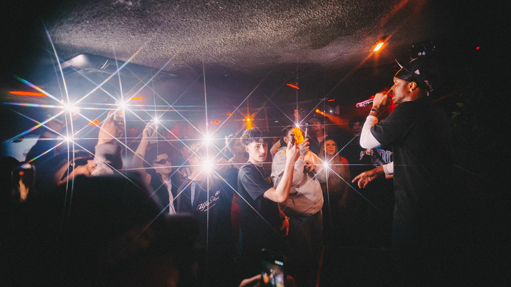

SAINT KWE
SCROLL TO LISTEN
LISTEN TO THE NEW PLAYLIST

529
HIDE & SEEK
WHO DEM BOYS
PETTY BOY ANTHEM

WHO DEM BOYSWATCH ON YOUTUBE ↗
SUMMER AIN’T OVERWATCH ON YOUTUBE ↗
ELLENWATCH ON YOUTUBE ↗
WASTE OF TIMEWATCH ON YOUTUBE ↗OFF
THE RECORD.
In the studio.
On the street.
Under the lights.



